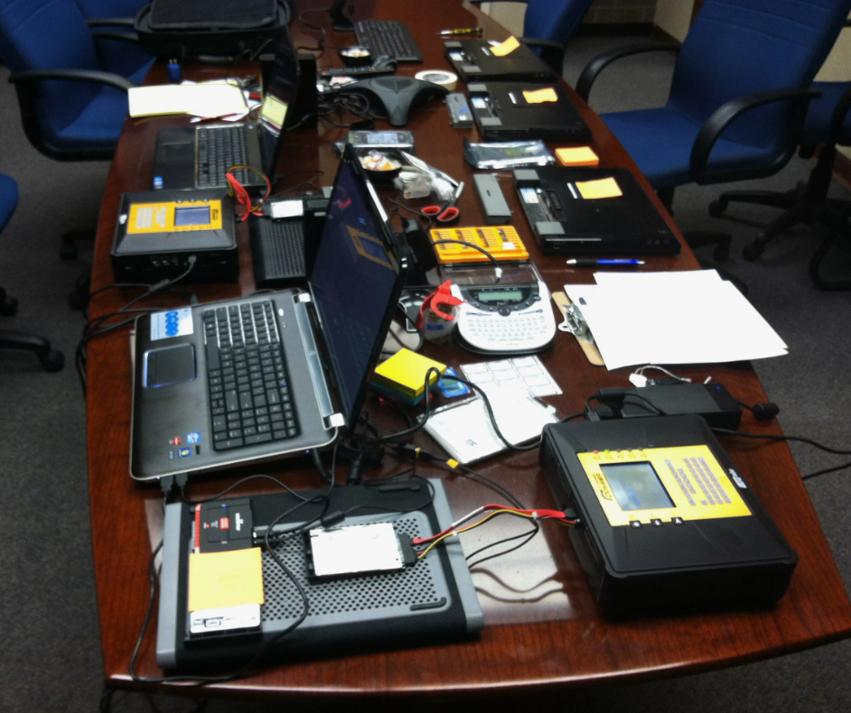
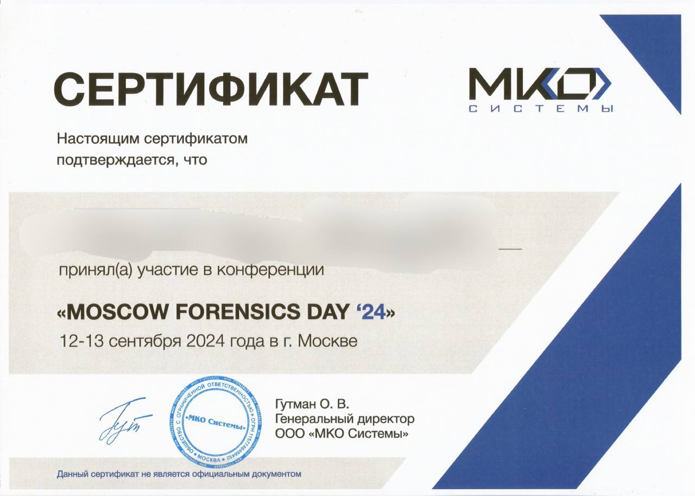

Точность постановки вопросов
До начала исследования согласуется предмет доказывания и круг технически значимых обстоятельств.
Основа работы — корректная постановка вопросов, технически обоснованный анализ и выводы, пригодные для судебного и внесудебного использования.
Приоритет отдается точности, полноте исследования и устойчивости выводов.
До начала исследования согласуется предмет доказывания и круг технически значимых обстоятельств.
Каждое заключение опирается на исследованные источники и проверяемую логику анализа.
При необходимости цифровая экспертиза дополняется договорными, инженерными и лингвистическими исследованиями.
Процесс построен так, чтобы сторона заранее понимала этапы, сроки и результат.
Работа ведется в дисциплине экспертной практики и документального подтверждения выводов.


